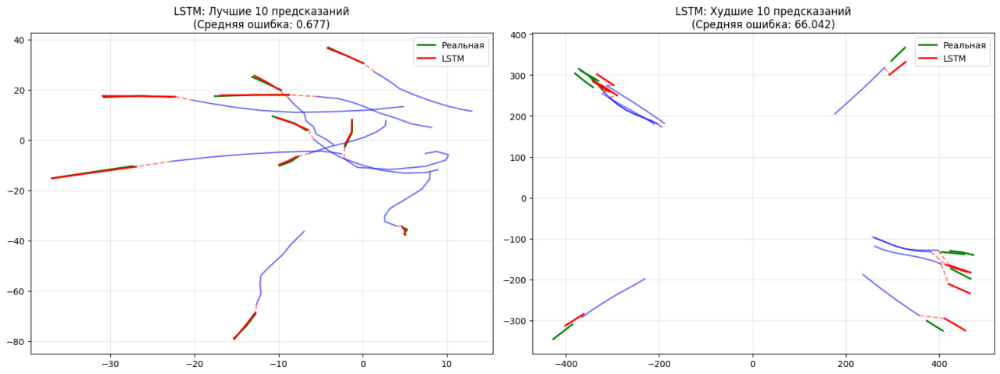
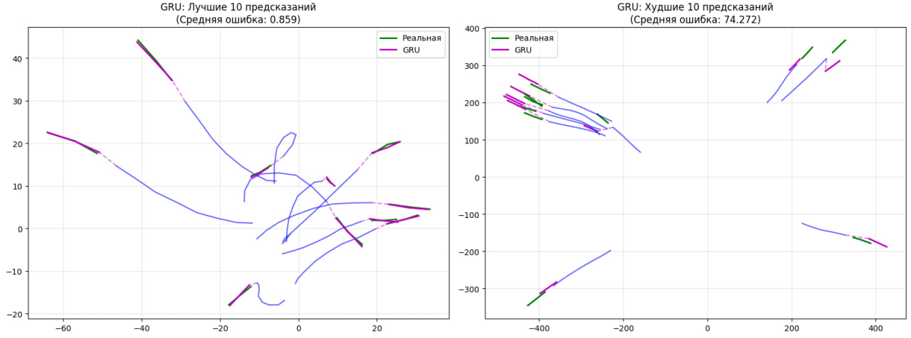
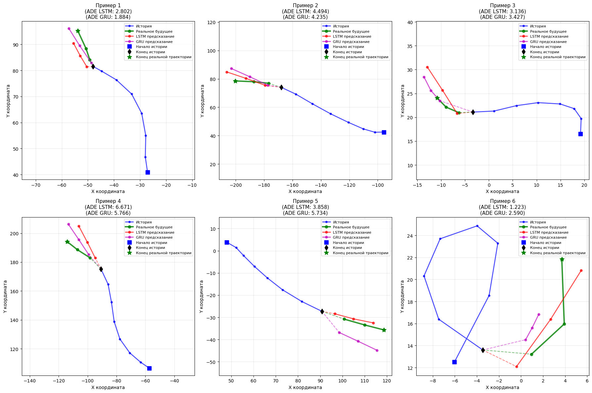

Тестирование и результаты моделей
Результаты для модели LSTM
После обучения модели LSTM на синтетическом датасете были получены результаты, представленные в Таблице 1.
| Модель | ADE | FDE | MAE |
|---|---|---|---|
| LSTM | 5.0203 | 6.5202 | 3.1784 |
Для детального анализа были отобраны 10 примеров с наименьшей и 10 примеров с наибольшей ошибкой предсказания (Рисунок 2).

Результаты обучения и тестирования модели LSTM демонстрируют картину с выраженной двойственностью. С одной стороны, сводные метрики указывают на приемлемый, хотя и не выдающийся, средний уровень производительности модели, способной улавливать общие паттерны в данных.
Однако более глубокий анализ, учитывающий распределение ошибок, раскрывает проблему устойчивости. Различие между лучшими и худшими предсказаниями является поразительным: в то время как в оптимальных случаях модель достигает исключительной точности со средней ошибкой около 0.68, в наихудших сценариях её ошибка взлетает до 66, что на два порядка выше.
Этот гигантский разрыв сигнализирует не просто о случайных промахах, а о систематическом сбое модели при столкновении с определёнными, вероятно, более сложными или редкими, типами входных данных, а также о возможном недообучении. Более высокое значение FDE по сравнению с ADE дополнительно подтверждает, что ошибка имеет свойство накапливаться с течением времени, и долгосрочные прогнозы являются слабым местом.
Таким образом, несмотря на формальную обучаемость и общую адекватность средних показателей, модель LSTM в её текущем виде обладает высокой непостоянностью качества прогноза.
Результаты для модели GRU
Для модели GRU, обученной на том же наборе данных, были получены метрики, приведенные в Таблице 2 .
| Модель | ADE | FDE | MAE |
|---|---|---|---|
| GRU | 5.4905 | 7.1098 | 3.4975 |

Анализ результатов обучения и тестирования модели GRU (Рисунок 3), использующей тот же обширный набор данных, позволяет сделать следующие выводы. Общая картина, которую демонстрируют сводные метрики, указывает на базовую работоспособность модели, способной аппроксимировать динамику временных рядов. Однако эти показатели лишь поверхностно описывают поведение модели. Гораздо более информативным является анализ распределения ошибок, который указывает на проблему устойчивости прогнозов. Модель демонстрирует колоссальный разброс в качестве работы: в лучших случаях она достигает высокой точности со средней ошибкой около 0.86, но в худших сценариях её ошибка взлетает до 74.27. Этот чудовищный разрыв, на два порядка величины, является ключевым индикатором. Он свидетельствует о том, что модель GRU, несмотря на свою структурную упрощённость и вычислительную эффективность, так же подвержена катастрофическим сбоям на определённых паттернах данных, возможно, тех, что связаны с резкими изменениями тренда или сложными долгосрочными зависимостями. Тот факт, что FDE вновь ощутимо выше ADE, закономерно подтверждает накопление ошибки на длинных горизонтах прогнозирования, что является общей слабостью рекуррентных сетей. Таким образом, можно заключить, что модель GRU в данной конфигурации успешно обучается и даёт удовлетворительные средние результаты, но её надёжность для практического развёртывания серьёзно подорвана экстремальной дисперсией.
Сравнение моделей LSTM и GRU
Сводные метрики обеих моделей для прямого сравнения представлены в [Таблица 3].
| Модель | ADE | FDE | MAE |
|---|---|---|---|
| LSTM | 5.0203 | 6.5202 | 3.1784 |
| GRU | 5.4905 | 7.1098 | 3.4975 |

На (Рисунок 4) показаны 6 случайных примеров прогнозов обеих моделей для качественного сравнения.
Прежде всего, обе модели демонстрируют общую, системную слабость, характерную для базовых рекуррентных архитектур в данной задаче. Это проявляется в идентичной патологической картине распределения ошибок: и LSTM, и GRU генерируют предсказания с экстремально высокой дисперсией качества.
Они показывают превосходную точность на «простых» выборках (ошибка ~0.68 для LSTM и ~0.86 для GRU), но терпят катастрофические неудачи на других, где ошибка взлетает на два порядка (до 66.0 и 74.3 соответственно).
Этот разрыв - не случайность, а индикатор принципиальной неустойчивости моделей к определённым, вероятно, редким или сложносоставным, паттернам во временных рядах. Более того, у обеих моделей финальная ошибка смещения (FDE) стабильно превышает среднюю (ADE), что однозначно указывает на общую проблему накопления ошибки при долгосрочном прогнозировании и неспособность в полной мере удерживать долгосрочные зависимости без специализированных механизмов управления контекстом, таких как внимание.
Однако, несмотря на это сходство в структурных проблемах, анализ сводных метрик выявляет небольшое, но последовательное преимущество архитектуры LSTM над GRU по всем ключевым показателям. LSTM достигает более низких значений:
- ADE: 5.02 против 5.49;
- FDE: 6.52 против 7.11;
- MAE: 3.18 против 3.50.
Эта разница, составляющая примерно 8–10%, может быть объяснена фундаментальным различием в устройстве ячеек. Более сложная и регулируемая архитектура LSTM с отдельными гейтами забывания, входа и обновления состояния, по-видимому, даёт ей немного более точный и контролируемый инструмент для работы с долгосрочной памятью в контексте данного конкретного набора данных [3].
LSTM, благодаря гейту забывания, потенциально лучше справляется с селективным удержанием и сбросом информации на длинных последовательностях, что и отражается в её чуть более низкой средней и, что особенно важно, финальной ошибке. GRU, с её упрощённой структурой и объединённым гейтом обновления, хотя и быстрее обучается и менее склонна к переобучению на небольших наборах, в данной задаче с 40 шагами, вероятно, демонстрирует чуть меньшую гибкость в тонком управлении потоком информации, что приводит к несколько большим средним погрешностям [4].
Выводы по сравнению моделей
Таким образом, сравнительный вывод является двухуровневым.
Макроуровень
Обе модели страдают от одной и той же фундаментальной проблемы - высокой дисперсии и ненадёжности прогнозов, что делает ни одну из них в текущем виде неготовой к развёртыванию в ответственных системах без серьёзной постобработки или архитектурной модификации.
Микроуровень
В рамках данного экспериментального сравнения классическая LSTM показывает себя как более точная архитектура, демонстрируя статистически лучшие средние результаты. Это говорит о том, что её дополнительная вычислительная сложность окупается на данном типе и объёме данных.
Однако это небольшое преимущество в средних значениях меркнет на фоне общей проблемы с выбросами, которая в равной степени присуща обеим моделям. Следовательно, выбор между ними не решает ключевую задачу обеспечения робастности; он лишь указывает на LSTM как на несколько более сильного кандидата для последующей, более глубокой доработки.
Доработка должна быть направлена уже не на выбор типа RNN, а на внедрение механизмов внимания, ансамблирования или методов обработки аномалий для искоренения катастрофических ошибок.